Crafts Kingdom is supplying all the arts and crafts from the land of Pakistan. Pakistani Crafts are
known as customs of the country since ancient times of Harappa, Mohen Jo Daro, Gandharan and Indus civilizations.
These crafts are famous around the globe for their magnetizing hues, attractive designs and delightful textures.
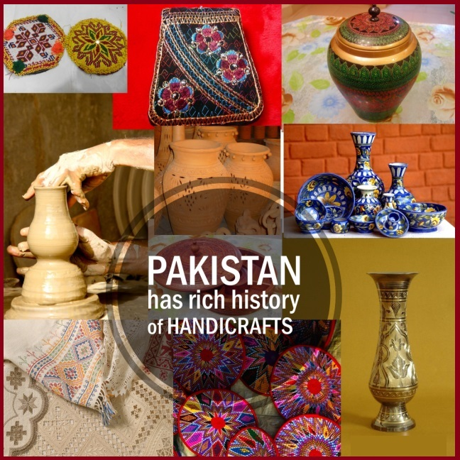
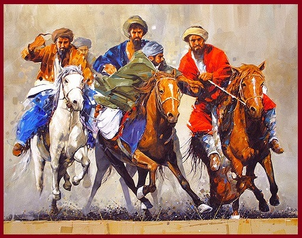
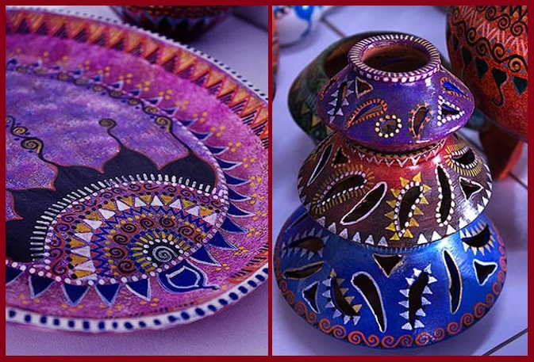
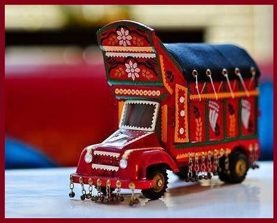
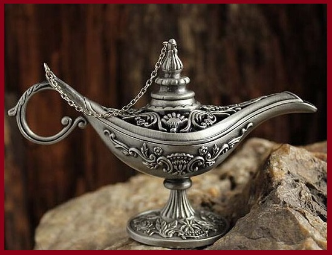
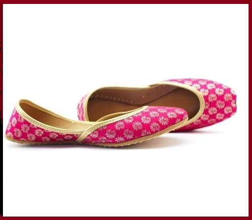
Every product we supplies is of great quaity, depends on the transparency of the materials, the glimpses of culture and art.
We promise to sell each product full legacy of Pakistani customs in terms of beauty, dignity, form and style.
The making of crafts is ethanic as different areas of Pakistan own their individual heritage and the style
in their specific manner. Handicrafts grabs the attention to the skills and endeavous of the craftsman him/herself.
Areas of Pakistan famous for customs
The products that we sell reflects the traditional ancient customs. The Punjab is fomous for the pottery and ceramics
especially the city of Sufism 'Multan'. The copper and brass decorations usally made up in famous city Lahore.
The Balouchi rugs and carpets are made up of pure materials since 16th century. The knotted whoolen carpets are well known in whole asia
and the Middle-East for their amazing designs. The other handicrafts are made in the city of Taxila with a heritage from Gandharan
Civilization since (4000-5000 BC).
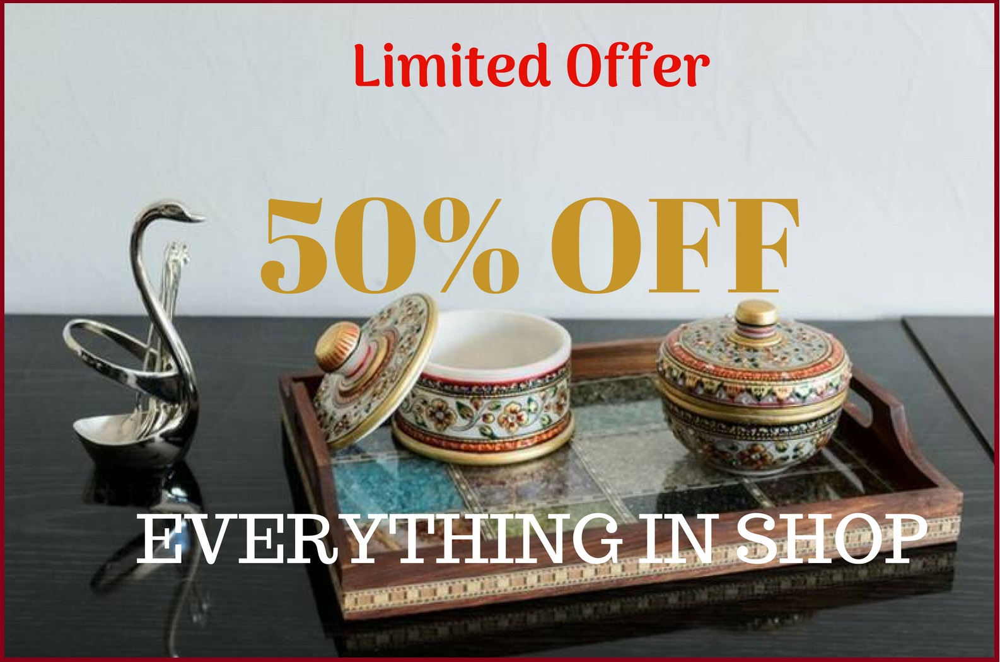
Limited special offer! 50% OFF on every product in the store.
 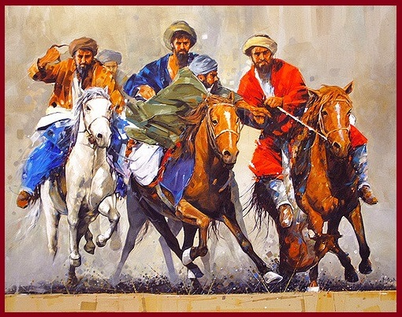
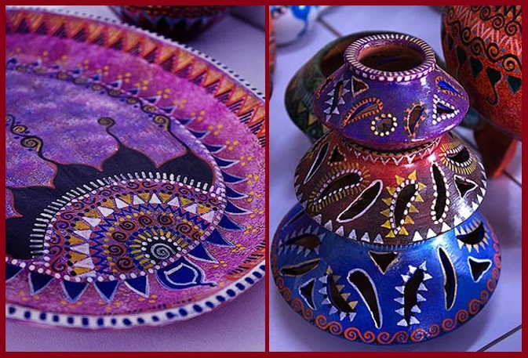
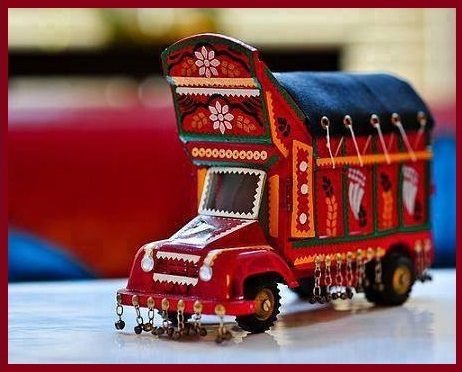
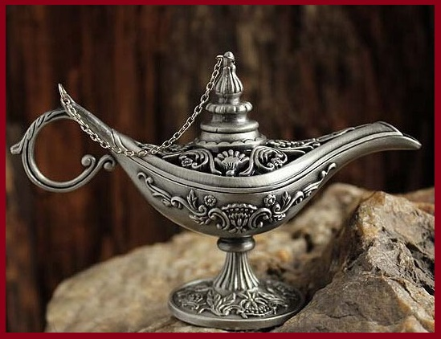
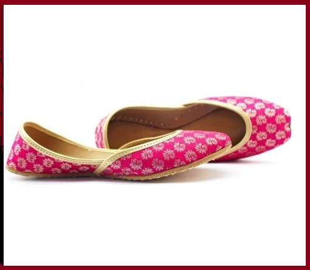
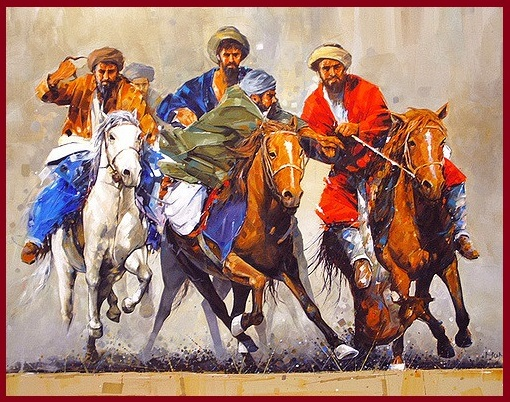
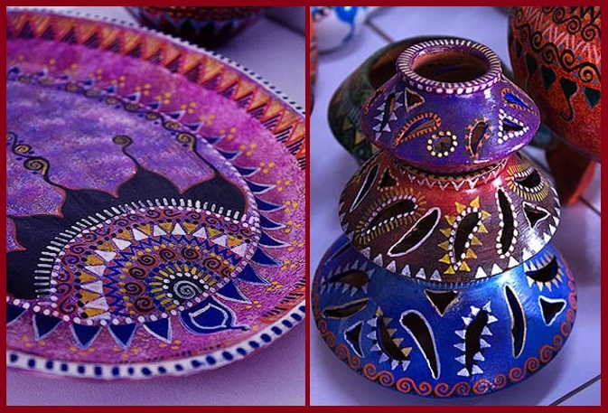
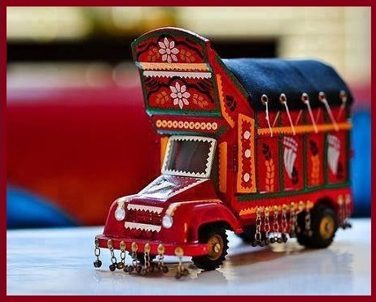
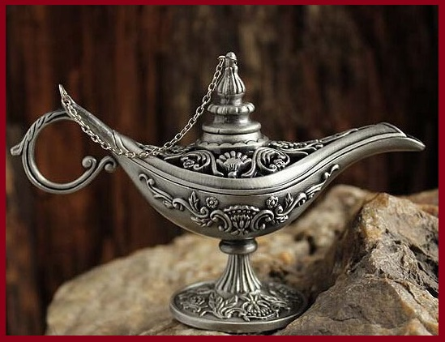
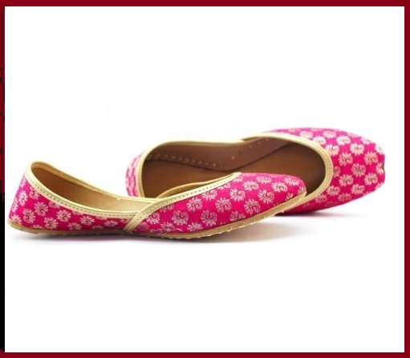